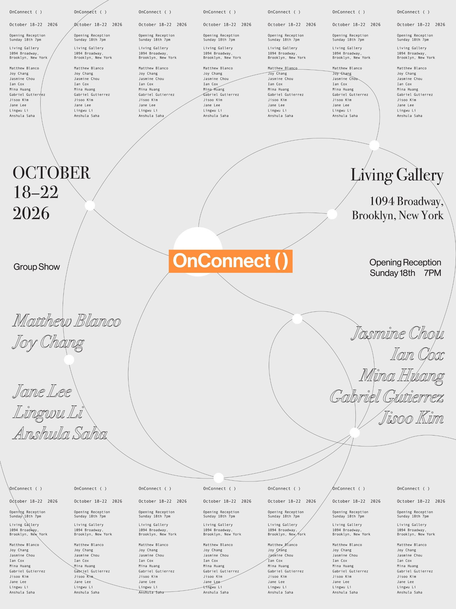

Main image to come
Title to come
- Materials
- Year
- Dimensions
Matthew Blanco
Matthew Blanco is an American-born technologist and adventurer. His work centers around the ephemeral bridge between software & hardware and the cultural implications of the technology we surround ourselves with. Through code, electronics, and digital fabrication, his work reveals the complexities of digital infrastructure that we take for granted and the ways programmed media has, in turn, programmed us. By viewing contemporary technology as a series of shifting environments, his work is both critical and hopeful of success how digital technology can empower us so long as we understand how it works.
Joy Chang
Tzuyi Joy Chang is a New York–based creative technologist and engineer who builds physical systems that explore the invisible forces embedded in everyday life. Through electronics, mechanisms, light, and familiar objects, her work invites audiences to reconsider how these hidden structures shape our experiences and interactions with the world around us.
Jasmine Chou
Jasmine Chou is a Taiwanese artist, creative technologist, and film producer based in New York and Taipei. Drawing from her background in film, television, and theater, she develops stories across film and interactive media. Her work explores different forms of storytelling and how narratives are shaped by medium, interaction, and audience experience. Her recent focus is on using interactive story to create playful ways of sharing knowledge and engaging with learning. She is currently pursuing her master’s degree at NYU’s Interactive Telecommunications Program (ITP).
Ian Cox
Ian Cox (b. 1990, Denver, Colorado) is an artist living and working in Astoria, New York. His practice centers on the construction of sculptural objects that simulate rituals, tools, and systems of belief adapted to contemporary technological and cultural conditions.
gabriel gutierrez
gabriel gutierrez is a mexican-american artist and sound enthusiast living in brooklyn. he uses software and hardware to build instruments and installations in order to explore new textures and ways of making sound.
Mina Huang
Mina Huang is a New York–based filmmaker and multidisciplinary artist who likes making things that bring out the kid in you. She is drawn to the way nostalgia can make something ordinary suddenly feel precious again. She likes taking familiar memories and everyday experiences, playing with the rules a little, and turning them into something others can join in on. She holds a BFA in Film from the School of Visual Arts and is now pursuing an MPS in Interactive Telecommunications at NYU.
Jisoo Kim
Jisoo Kim is an artist and creative technologist based in Seoul and New York. Her practice explores loneliness, intimacy, place, and human connection within contemporary urban life. Through interactive installations, physical computing, 3D animation, and digital media, Kim creates immersive experiences that explore how technology shapes the ways we relate to ourselves, others, and our surroundings. Her work combines storytelling and computational processes to create accessible forms of interaction, while her practice also extends into curatorial work, creative production, and workshops.
Jane Lee
Jane Lee is a Seoul and New York based painter and writer who explores the relationship between space, object, and language. Lee’s writings investigate the visual layout and linguistics of emotional time and space through poetry, prose, and journalism. She holds an MFA from California Institute of the Arts (2024). Lee’s recent exhibitions include the Traces in the Moment, Floor, Seoul (2022) and San Francisco Art Book Fair with Waikiki Funeral (2024).
Lingwu Li
Lingwu Li is a multimedia artist exploring physical and digital space through mixed reality and interactive games. His work examines how spaces shape behavior and social relationships. He is currently pursuing an MFA at NYU’s Interactive Telecommunications Program.
Anshula Saha
Anshula Saha is a designer, creative technologist, and storyteller based in New York City. Her practice is drawn to the emotional weirdness of technology: waiting, friction, longing, attachment, fear, intimacy, misunderstanding, and care. She is interested in how digital systems meet the body, how people learn through touch and interaction, and how technology changes the way we connect with and treat one another. She believes accessibility is not only about making systems easier to use, but about making people feel invited into worlds they might otherwise feel excluded from. Working across code, writing, installation, physical computing, materials, memory, and storytelling, she builds work that is soft, embodied, and deeply human while still being technically precise.

Connection can no longer be understood as a simple link between discrete entities. Digital networks, interfaces, algorithms, and data have fundamentally reshaped the ways in which humans, technologies, images, and environments relate to one another. Rather than an outcome of interaction, connection has become the condition through which relationships are organized and continually reconfigured. We do not stand outside these networks as their creators or observers, but exist as part of the connection that shapes us.
OnConnect() takes this shift in perception as its point of departure, approaching connection as an event rather than a fixed state. The exhibition explores how relationships between humans and technologies, spaces and environments, are formed and transformed, while questioning how the human is positioned within these systems. The participating works construct situations in which visitors, artworks, and space actively reorganize one another. The gallery thus becomes not a site where connection is represented, but one in which it is enacted, negotiated, and continually renewed.
Bringing together ten media artists, OnConnect() features interactive installations, kinetic objects, sound works, moving images, and network-based projects that investigate relationships between humans and machines, material and immaterial systems, perception and infrastructure. Visitors move beyond the role of spectators as their presence, movement, and decisions become integral to the unfolding of each work. Through these encounters, OnConnect() invites us to reconsider what it means to be connected and what we seek from connection.
Contact Email to come
Publication name
Article title to come
Date
Publication name
Article title to come
Date
Press the numbers to see the artworks
and watch the connections form
*Visitors viewing or interacting with the artworks may be photographed or filmed for exhibition documentation and promotional use.